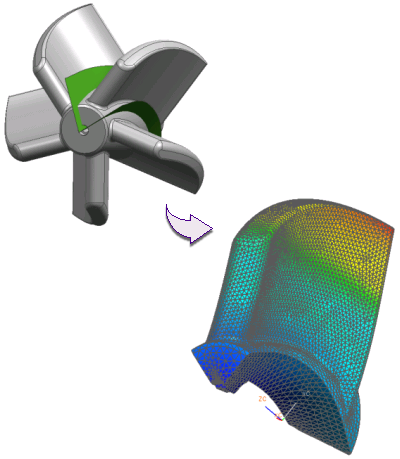

Models that exhibit symmetry can be reduced, or “sliced,” into repeating pieces. Analyzing one piece of the model with appropriate boundary conditions applied provides results that are representative of the entire model.
A model is symmetric when the model geometry is symmetric and:
The loads in the model exhibit the same symmetry.
The constraints in the model exhibit the same symmetry.
The behavior of the materials used in the model exhibit the same symmetry.

Taking advantage of symmetry reduces the size of the model. Because the model is smaller:
The solution time is reduced, or,
A more refined mesh can be used to improve accuracy without increasing the solution time.